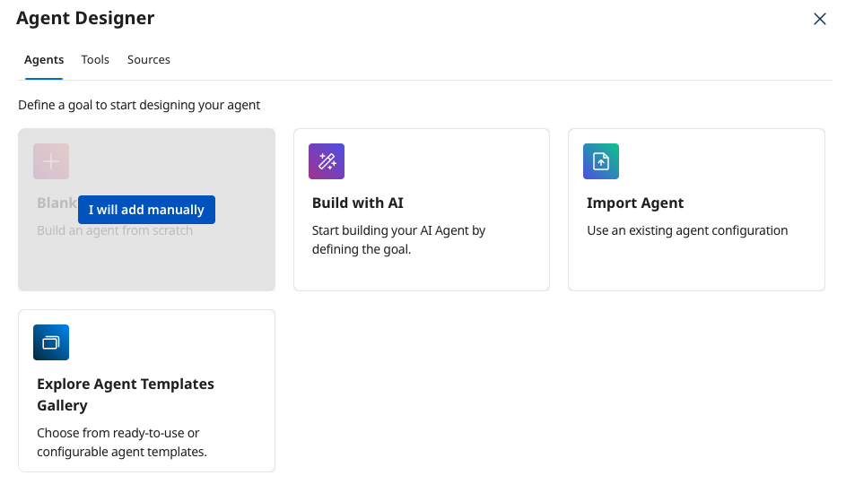
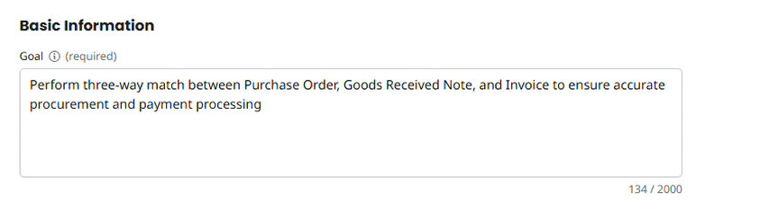
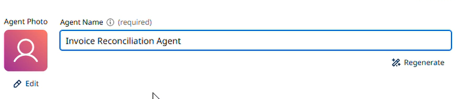
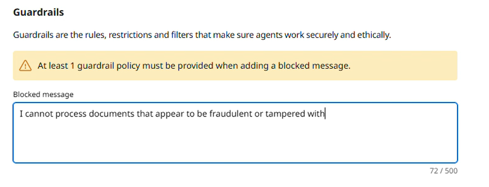
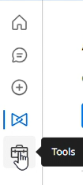
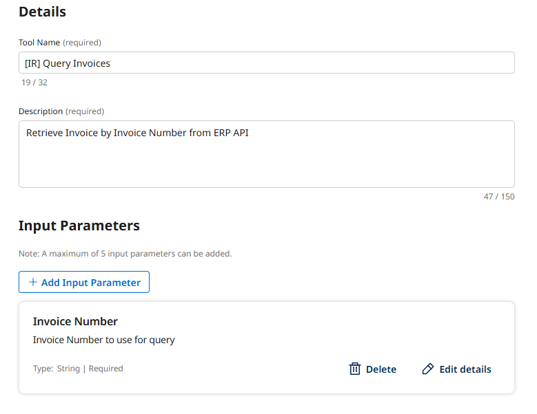
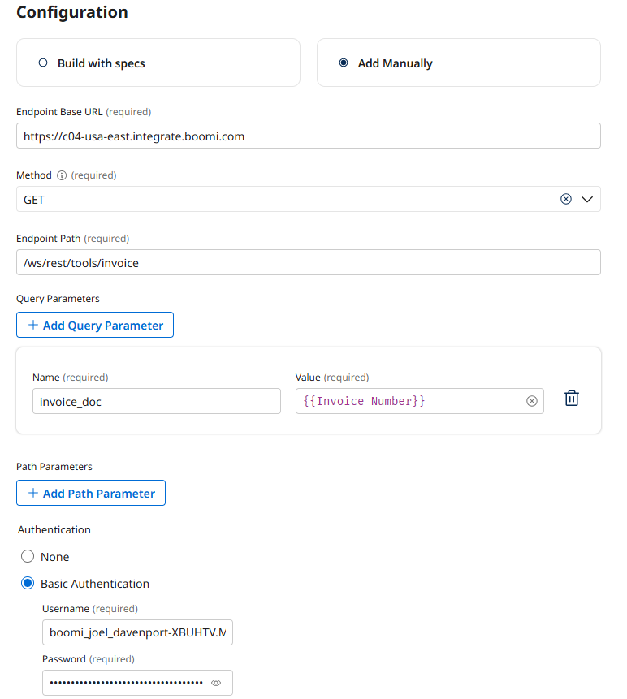
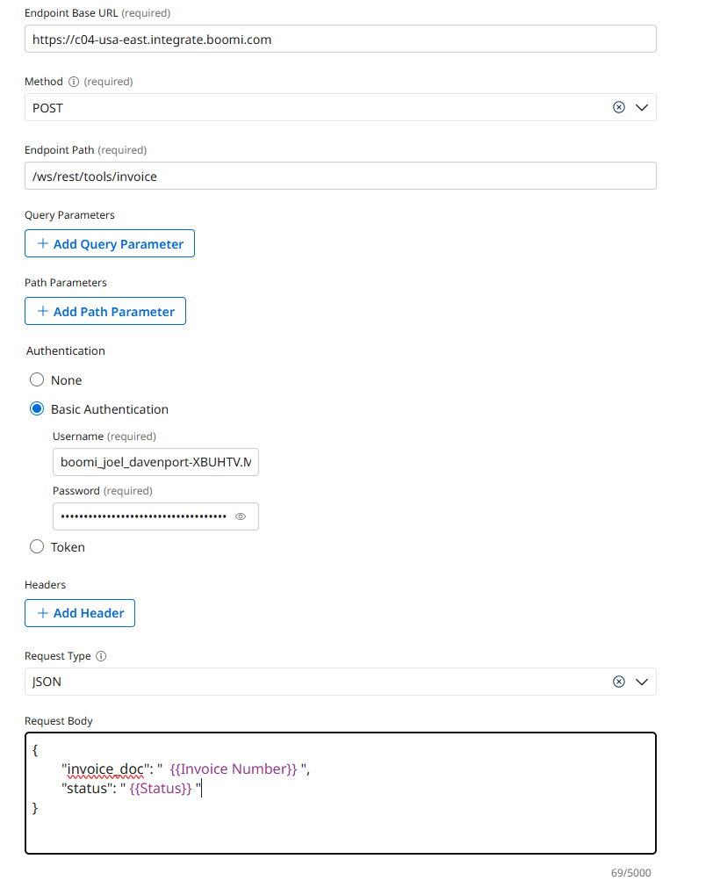
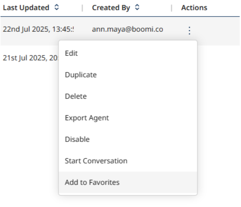
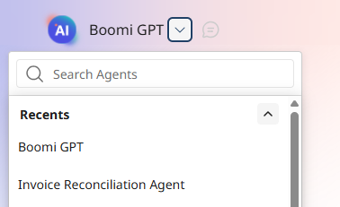

Invoice Reconciliation Lab
Build an AI agent that automates three-way invoice matching across Purchase Orders, Goods Received Notes, and Invoices.
Global-Corp Manufacturing processes thousands of invoices monthly. Their manual three-way match process is error-prone, time-consuming, and creates major operational bottlenecks. This lab builds an Invoice Reconciliation Agent to automate the complete matching process.
Prerequisites
- Login to the shared Workshop Environment — check your email for a platform invite.
- Load this guide in a separate tab to follow along.
Canonical Source
This lab guide was authored for the Boomi Labs site. The canonical version with the latest updates can be found at https://labs.boomi.com/labs/financial-operations/invoice-reconciliation/intro.
Part 1: Creating the Agent Profile and Tasks
Build the foundation of your agent by defining its core purpose, tasks, instructions, and safety guardrails.
Start a New Agent
- In Agent Designer → Agents, create a new agent by clicking Create New Agent.
- Start with a Blank Template → I will add manually.

Define the Agent's Profile
- In the Goal (required) field: Perform three-way match between Purchase Order, Goods Received Note, and Invoice to ensure accurate procurement and payment processing.

- In Agent Name (required), enter [builderInitials] Invoice Reconciliation Agent

- Scroll down to the Voice section and select Professional.
- Click Save & Continue.
Create Tasks: Collect Documents, Validate Details, Identify Discrepancies, Generate Report
Create four tasks for: Collect Procurement Documents, Validate Document Details, Identify Discrepancies, and Generate Matching Report. Click + Add New Task for each.
Configure Agent Guardrails
- Blocked message: I cannot process documents that appear to be fraudulent or tampered with.
- Add Denied Topic: Document Integrity — Prevent processing of potentially fraudulent documents.

Deploy the Agent
- Click Save & Continue to reach the Review screen, then click Deploy Agent → Deploy.
Part 2: Creating and Attaching Tools
Create API tools to retrieve Invoice, Purchase Order, and GRN information, then attach them to agent tasks.
Navigate to the Tools Section
- In Agent Garden, click the Tools icon in the left navigation bar.

Create Query Invoices Tool
- Click Create New Tool → API → Add Tool.

- Tool Name: [builderInitials] Query Invoices | Description: Retrieve Invoice by Invoice Number from ERP API
- Add Input Parameter: Invoice Number (String, required)

- Configuration: Base URL https://c04-usa-east.integrate.boomi.com | Method: GET | Path: /ws/rest/tools/invoice | Query: invoice_doc={{Invoice Number}} | Basic Auth.

Create Query Purchase Orders and Query GRNs Tools
Repeat the same process for PO (path: /ws/rest/tools/purchaseOrder, param: po_number) and GRN (path: /ws/rest/tools/grn, param: po_number).
Attach Tools to Collect Procurement Documents Task
- Navigate back to Agents → Edit → Disable the agent.
- On Tasks tab, find Collect Procurement Documents → Manage Tools → Add New Tool.
- Add: Query Invoices, Query Purchase Orders, Query GRNs. Click Add Tool, Save.
Part 3: Allowing the Agent to Take Action
Create email and ERP update tools, attach them to the Generate Matching Report task, and test the agent.
Create Send Mail Tool
- Tool Name: [builderInitials] Send Mail | POST to /ws/rest/tools/sendEmail
- Request Body: {"message": "{{AGENTREPORT}}", "to": "yourEmail", "subject": "Invoice Matching Report"}
Create Update Invoice Tool
- Tool Name: [builderInitials] Update Invoice | POST to /ws/rest/tools/invoice
- Input Parameters: Invoice Number and Status (must be APPROVED, REJECTED, or AWAITING REVIEW)

Attach Tools and Deploy
- Attach Update Invoice and Send Mail to the Generate Matching Report task.
- Click Save & Continue → Deploy Agent → Deploy.
Add Agent to Favorites and Test
- In the Agents list, click the vertical ellipsis → Add to Favorites.

- Open Chat, select your Invoice Reconciliation Agent from Favorites.

- Ask the lab lead for an Invoice ID, then prompt: Evaluate {Invoice ID}